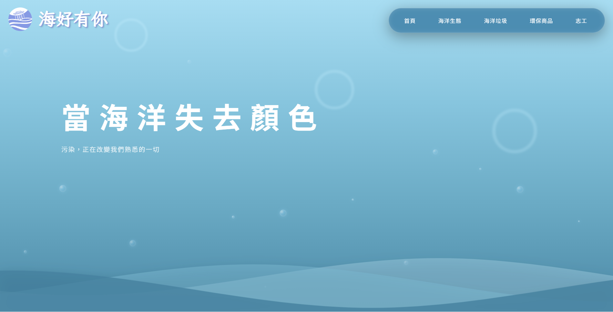
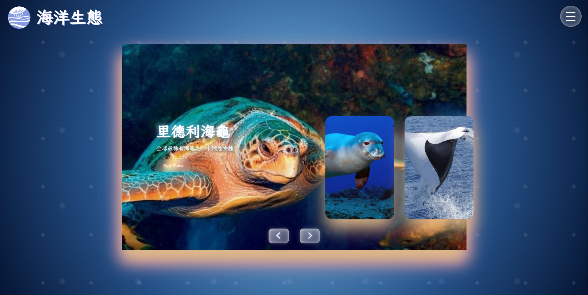
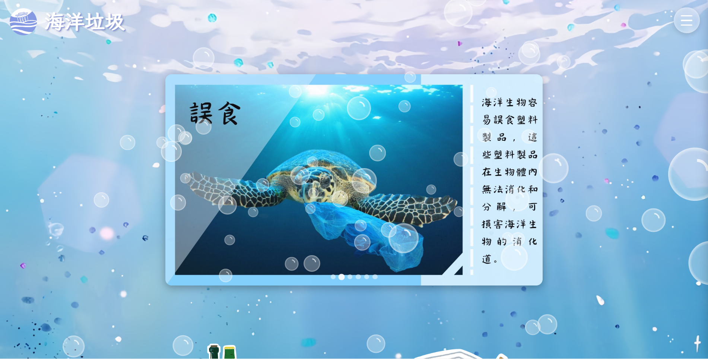
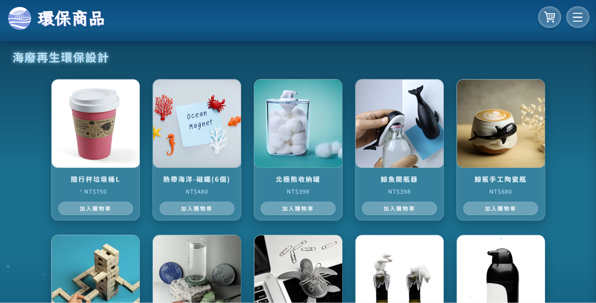
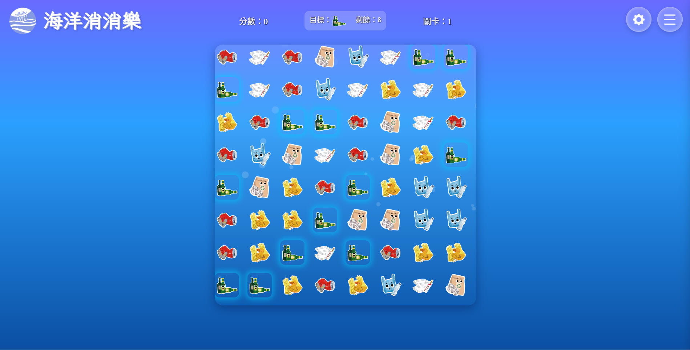

互動式網頁設計
團隊人數：5人
負責內容：UI設計、前端開發、資料查詢
本專案以海洋環境保育為主題，透過互動式網頁設計呈現海洋垃圾所帶來的影響，期望喚起大眾對海洋污染議題的關注。
在視覺設計上，採用清新且具有海洋意象的配色與動態效果，營造沉浸式的觀看體驗，同時降低議題的距離感，使年輕族群更容易理解與接受。
本網站主要目標族群為環保議題關注者與年輕使用者，希望透過互動設計的方式，將嚴肅的環境議題轉化為易於理解且具有吸引力的內容，進一步提升使用者對海洋保育的重視與行動意識。




